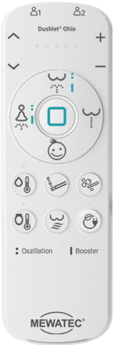
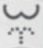
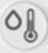
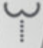

MEWATEC Ohio O800 – Quickguide (Udvidet)

👤 Brugerprofiler
Der er to brugerprofiler (1 og 2), så hver bruger kan gemme sine personlige indstillinger. Vælg profil med et kort tryk før skylning. Efter vask – når tryk, dyseposition og temperatur er justeret – hold profilknappen nede i ~3 sek. for at gemme. Et kort bip bekræfter.
🧭 Sådan starter du en vask
- Sæt dig på sædet (sensor aktiveres).
- Vælg profil 1 eller 2.
- Tryk  Anal eller Dame.
- Tryk igen for oscillation (frem/tilbage).
- Hold knappen ~3 sek. for Booster.
Under vask kan du justere dyseposition (), vandtryk (), vandtemperatur () og sædevarme ().
🔧 Hovedfunktioner
| Funktion | Kort brug |
|---|---|
| Analvask | 1× Start · 2× Oscillation · Hold 3 sek = Booster |
| Damevask | Mildere skyl; samme betjening som ovenfor |
|  Indløb (Enema) | Fokuseret stråle · start/stop · valgfri oscillation |
| Børnetilstand | Skånsomt program med reduceret temp./tryk |
| Stop | Afbryder alle funktioner (sædevarme forbliver) |
| Vandtemperatur | 4 trin + slukket |
| Sædevarme | 34° / 37° / 40° + slukket |
 Tørrer (O800) Tørrer (O800) | Start/stop; 5 temperaturtrin; ca. 3 min. |
| Dyserens | Auto før/efter · Hold ~3 sek. for varm hygiejneskyl |
| Energispare | 1× Auto · 2× Udvidet · hold 3 sek = Standby |
Tips
- Skylningen stopper automatisk efter ~2 minutter
- Tryk for straks stop
- Dyseposition og tryk gemmes pr. profil
- Automatisk dyserens før og efter hver brug